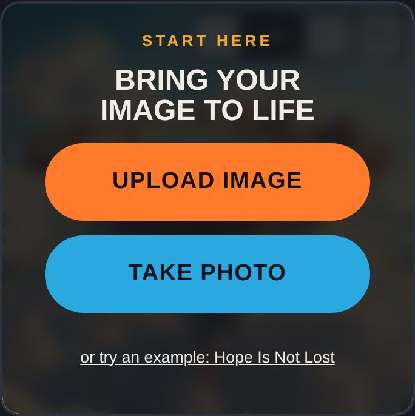
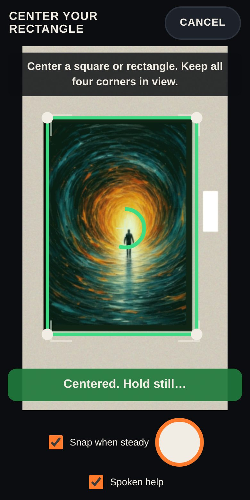
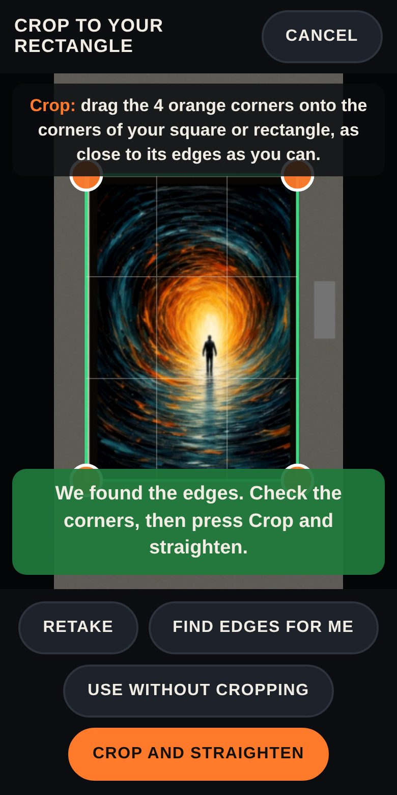
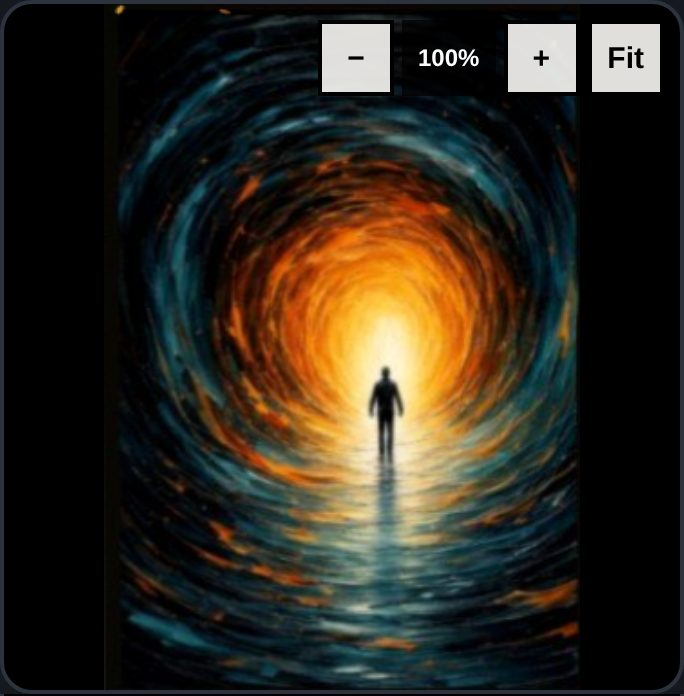
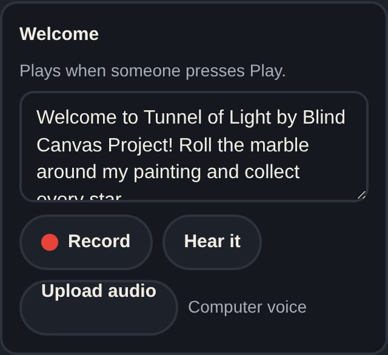
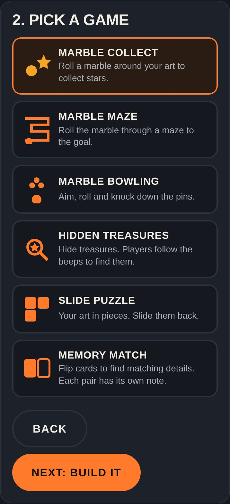
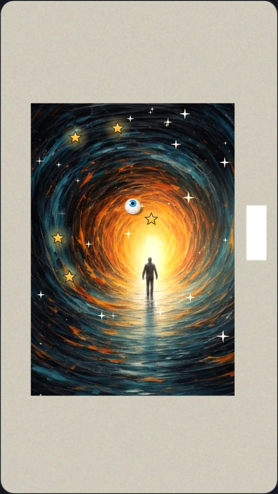

From a photo to a living piece in minutes.
No app, no animation skills. Seven steps, all in your browser.

1Start with your image
Open the Creator Studio and press Upload image or Take photo. Anything square or rectangle works: a painting, poster, card, book cover or sheet of paper.

2Center it
Taking a photo? Center the art with all four corners showing. Art Alive outlines it, tells you to move closer or left or right, and snaps when you hold still.

3Crop it tight
Drag the four orange corners onto the corners of your rectangle. A magnifier helps you land them exactly. Press Crop and straighten.

4Bring it to life
Tap a recipe like Windy day or Starry night, or open the full studio to brush in motion, light, weather and sound yourself.

5Add your voice
Press Record and describe your art, or upload an audio file. Everything you say also shows as captions, and nothing is left silent for blind visitors.

6Make it a game (optional)
In the Game Maker, turn your image into a marble game, maze, bowling, hidden treasures, a puzzle or memory cards.

7Play it on the wall
Press Play on the painting and point your phone at the real art. Your game sits right on it. Download it to share, and soon publish with one tap and a QR code.
Ready?
Start with any square or rectangle you have nearby.